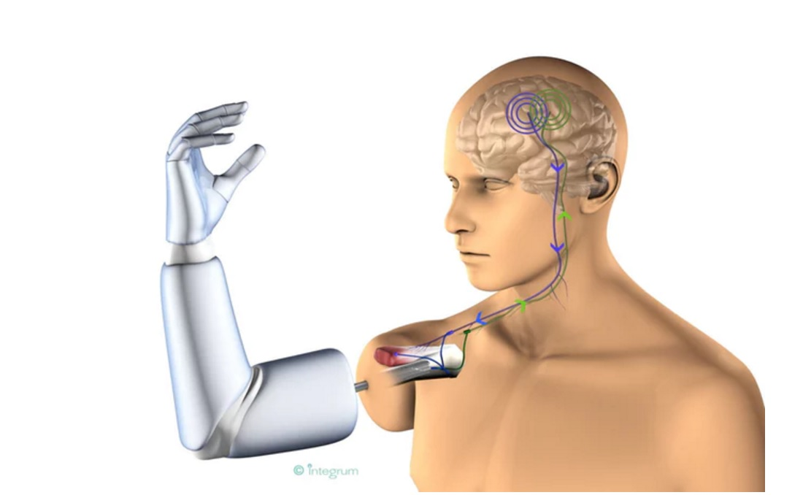

Overview
Biofeedback is the process of understanding physiological function using detectors to gain information on activities of specific systems. Processes that can be controlled are muscle tone, brainwaves, heart rate, skin conductance and pain perception. It has been use for more than 50 years in rehabilitation to facilitate normal movement patterns after injury.
Why it is used?
It helps improve health, performance and physiological changes that is caused by emotions, behavior or thoughts. Biofeedback training can improve health issues such as anxiety, asthma, ADHD, constipation, headache, motion sickness, tinnitus, urinary incontinence etc. Most sensors are noninvasive and have a chance to reduce or eliminate medication. The addition of biofeedback to a conventional exercise programme resulted in a significantly shorter time in using a walking aid compared to conventional exercise training alone. [1]
How is it used?
Sensor
Electromyograph (EMG) is used to detect muscle action potentials from skeletal muscle that are responsible for muscle contraction. The EMG signal can be picked up using either surface electrodes or by inserting wires or needles to the muscle. The input EMG signals are distorted with a lot of noise from surrounding muscles, therefore the voltage fluctuates. The signals have to undergo rectification, filtering and integration to obtain a unified signal to be able to compare with other processed signals. This information will be displayed on screen in real time. With this real-time audiovisual feedback, individual can learn to invoke positive physical changes like relaxing or tensing specific muscles to reduce pain.[2] 
Feedback thermometer
It detects skin temperature with a thermistor (temperature sensitive resistor) attached to either a finger or a toe. The temperature of the skin changes accordingly to blood circulation through body tissue. As the temperature changes, the resistance of the thermistor changes. This feedback will be displayed on a monitor. When the patient is in a state of increased exertion, excitement or stress, muscle fibers contract, causing a stenosis of vasculature. This leads to a reduction of skin temperature, since blood circulation through the tissue decreased. In contrast, the musculature will relax when the patient is feeling relaxed causing the vasculature to expand. Hence, the skin temperature rises. A decrease in skin temperature at the hands might be caused by mental stress. This could be harmful in many contexts in modern society (e.g. worries, anxieties). Biofeedback is an established way to learn to control said physiological stress.
Why is it an example of feedback in engineering?
Biofeedback as a therapy uses sensors to detect physiological changes in a patient’s body such as the heart function, brainwaves, breathing, skin temperature and muscle activity. These signals are processed and displayed as feedback. Individuals learn to control their thinking to support desired changes through the feedbacks from the instruments.[4]

Applying Biofeedback - Prosthetics
The brain uses a highway of different neurons such as motor and sensory neurons to coordinate electrical signals controlling many homeostatic responses and reflexes. Nerve connections in limbs are essential to the motor functions of the body as they relay feedback regarding the immediate environment to the brain. With the loss of these nerves in amputation, research has been undertaken to recreate the sort of electrical feedback an organic limb would produce in order to mimic ‘normal’ motor skills in prostheses. To achieve this goal there are several major steps, which have to be undertaken. Recording the electrical activity along certain neural pathways is the first essential step in developing a greater understanding of neural activity which can be considered as biofeedback. Electromyography also described on this page is an example of a technique used to record this kind of neural activity. MEAs (Multielectrode Arrays) [5] involving two plates through which electrical signals can be produced and detected is another technique used in the field to allow greater understanding of the neural pathways of the body and ultimately allow the isolation of pathways of interest to the now amputated limb for research. For example a certain electrical pathway may relate to a certain tendon being moved by a distance relative to the magnitude of the input signal. Varying this signal artificially can then allow bioengineers to calibrate different prosthetic parts to move a similar amount when that certain signal is received in the prosthetic [6]. There are thousands of nerve clusters, which transfer electrical signals regarding all types of movement and senses to the brain. Signals must therefore be broken down, interpreted and converted from the body’s amalgamated electrical signals to electricity in a circuit in a certain mapped ratio to move components by different amounts in the prosthetic. Therefore it can be understood that to replicate the dexterity a human will usually have with an organic hand is next to impossible unless a more efficient way of mapping the neurological network and identifying the most important nerve clusters and associated electrical signals is discovered.
A recent breakthrough has seen American scientists provide the sense of touch to a trained monkey with an arm prosthetic [8]. They achieved this by wiring the prosthetic’s electrical gateways directly to the primary somatosensory cortex, a region of the brain which is essentially a highly intertwined region of neuron pathways returning from the body. Connecting the prosthetic electrical gateways directly to specific pathways essentially short-circuited the route of the electrical signals involving touch directly to the prosthetic. However these connections are an extremely invasive array of external wirings attached to the head and are therefore impractical and disruptive to a person’s every day functionality. Nevertheless, the idea that this specific region of the brain may be of great use in the near future for the implementation of senses into prosthetics is a promising.